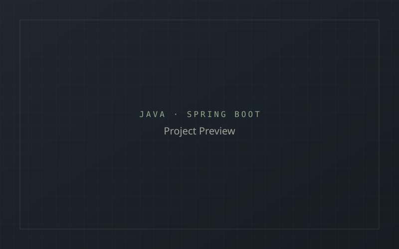

Upskill Mini Project
A practical Spring Boot application created to strengthen backend development fundamentals, CRUD operations and API testing.

A practical Spring Boot application created to strengthen backend development fundamentals, CRUD operations and API testing.

The Upskill Mini Project is a hands-on Spring Boot application built specifically to strengthen backend fundamentals and API testing practices.
Building confidence with the Java backend ecosystem required a small, focused project to practice core concepts without the complexity of a full production system.
Built a Spring Boot application with CRUD operations backed by MySQL, testing each endpoint methodically using Postman.
Getting comfortable with Spring Boot conventions and structuring a clean, working backend from scratch.
Key outcome: Improved understanding of Spring Boot fundamentals, CRUD operations and hands-on API testing.